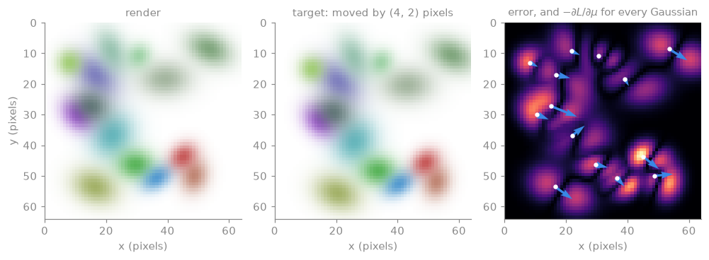
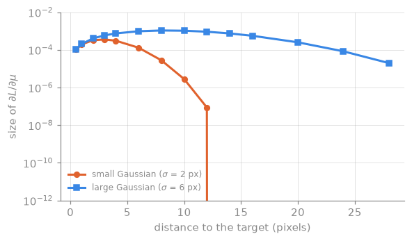
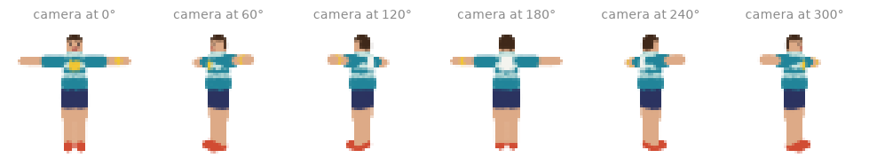
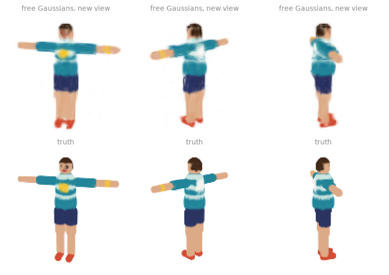
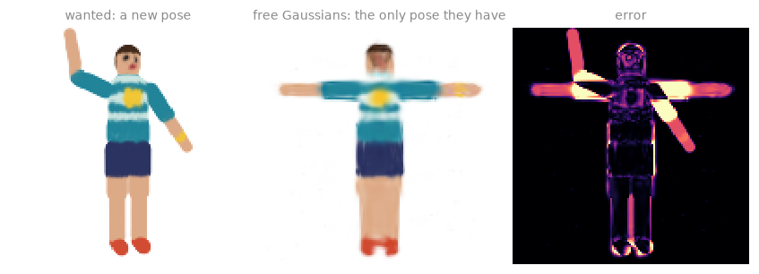
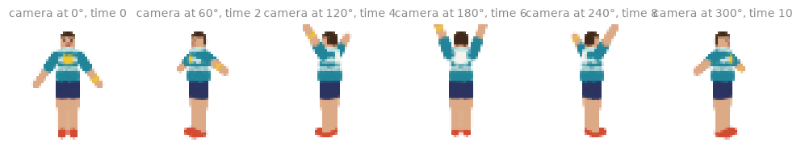
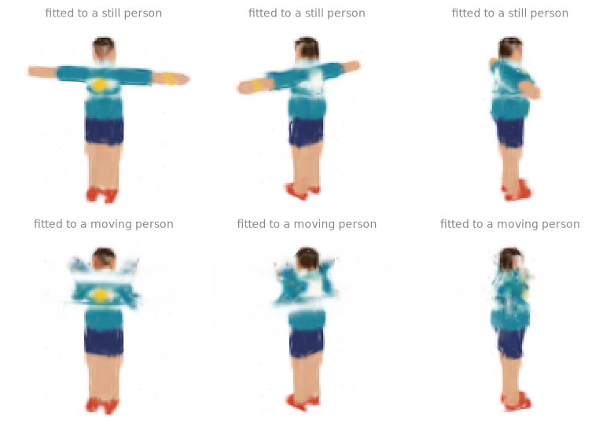

Gradients: fitting Gaussians to pictures, and why that is not yet an avatar#
What you will learn
What the gradient of a pixel with respect to a Gaussian’s colour, opacity and position looks like, and how to read it.
How to check a renderer’s gradients against finite differences, and why the check needs double precision.
How free 3D Gaussians fitted to a few views give new views of a still person.
The two failures that motivate the rest of the course: free Gaussians cannot be re-posed, and fitted to a moving person they blur.
Prerequisites: Lesson 2a (compositing) and Lesson 2b (projection).
The renderer of the last two lessons is a chain of smooth operations:
A loss \(L\) compares the rendered image with a photograph. Because every arrow is differentiable, the chain rule gives \(\partial L / \partial(\text{anything})\), and gradient descent can change the Gaussians until the render matches the photograph. This lesson opens the chain link by link, then uses it, then shows what it cannot do.
1. What one pixel tells one Gaussian#
Take a single pixel. From Lesson 2a, with the Gaussians sorted front to back,
Colour. \(C\) is linear in every colour, so
A Gaussian’s colour gets exactly as much say as its share of the pixel. A hidden Gaussian (\(w_i = 0\)) learns nothing about its colour from this pixel.
Alpha. \(\alpha_i\) appears in its own weight and, through the transmittance, in the weight of everything behind it. Collect what lies behind Gaussian \(i\) into one colour \(B_i\): the picture you would see at this pixel if Gaussians \(1..i\) were removed. Then \(C = (\text{front part}) + T_i\,[\alpha_i c_i + (1 - \alpha_i) B_i]\), and
Read it as a sentence: making Gaussian \(i\) more opaque moves the pixel from what is behind it towards its own colour, to the degree that it is visible at all.
def composite_pixel(alpha, color, bg):
"""One pixel. alpha (N,), color (N, 3), sorted front to back. Returns C, weights w, transmittances T."""
T = torch.cat([torch.ones(1, dtype=alpha.dtype), torch.cumprod(1 - alpha, 0)]) # T_1 .. T_{N+1}
w = alpha * T[:-1]
return w @ color + T[-1] * bg, w, T
dd = torch.float64
alpha = torch.tensor([0.30, 0.60, 0.20, 0.80], dtype=dd, requires_grad=True)
color = torch.tensor([[0.9, 0.2, 0.1], [0.1, 0.6, 0.9], [0.9, 0.8, 0.1], [0.2, 0.7, 0.3]], dtype=dd, requires_grad=True)
bg = torch.ones(3, dtype=dd)
C, w, T = composite_pixel(alpha, color, bg)
red = C[0] # look at the red channel of the pixel
g_color, g_alpha = torch.autograd.grad(red, (color, alpha))
# the two formulas
behind = [composite_pixel(alpha[i + 1:], color[i + 1:], bg)[0] for i in range(4)] # B_i for every i
formula_alpha = torch.stack([T[i] * (color[i, 0] - behind[i][0]) for i in range(4)])
print("dC/dc_i autograd:", [round(v, 4) for v in g_color[:, 0].tolist()], "\n w_i: ", [round(v, 4) for v in w.tolist()])
print("dC/da_i autograd:", [round(v, 4) for v in g_alpha.tolist()], "\n T_i(c_i-B_i):", [round(v, 4) for v in formula_alpha.tolist()])
assert torch.allclose(g_color[:, 0], w) and torch.allclose(g_alpha, formula_alpha)
dC/dc_i autograd: [0.3, 0.42, 0.056, 0.1792]
w_i: [0.3, 0.42, 0.056, 0.1792]
dC/da_i autograd: [0.6528, -0.2576, 0.1512, -0.1792]
T_i(c_i-B_i): [0.6528, -0.2576, 0.1512, -0.1792]
The signs in the second row are worth a look. The first Gaussian is red, and brighter in red than what is behind it: more opacity raises the pixel’s red value. The second is blue with little red: more of it lowers the red value.
Position. \(\alpha_i = o_i \exp(-\tfrac12 d^\top \Sigma'^{-1} d)\) with \(d = x - \mu'\), so
For a round Gaussian this is an arrow from the centre towards the pixel. To raise its alpha at a pixel, a Gaussian moves towards that pixel. The arrow is scaled by \(\alpha_i\) itself, and that has a consequence we will meet in section 3: where a Gaussian has no alpha, it feels nothing.
mu2d = torch.tensor([10.0, 12.0], dtype=dd, requires_grad=True)
Sigma2d = torch.tensor([[9.0, 3.0], [3.0, 5.0]], dtype=dd)
pixel = torch.tensor([13.5, 10.5], dtype=dd)
d = pixel - mu2d
a = 0.8 * torch.exp(-0.5 * d @ torch.linalg.inv(Sigma2d) @ d)
(g_mu,) = torch.autograd.grad(a, mu2d)
formula_mu = a * torch.linalg.inv(Sigma2d) @ d
print("d alpha / d mu' autograd:", g_mu.tolist(), "\n formula: ", formula_mu.tolist())
assert torch.allclose(g_mu, formula_mu.detach())
d alpha / d mu' autograd: [0.10176749983916747, -0.11101909073363725]
formula: [0.10176749983916747, -0.11101909073363725]
The remaining links, from \(\mu'\) and \(\Sigma'\) back to the 3D centre, the axis lengths and the quaternion, are the projection of Lesson 2b. Nobody differentiates them by hand in a notebook: autograd does it. But autograd only differentiates the code that was written, so the code deserves a test.
2. Checking the whole chain with finite differences#
The test is the definition of a derivative. Nudge one parameter by \(\pm\varepsilon\), render twice, and compare the slope with what autograd reports:
teaching.numeric_grad does this for every entry of a tensor. The scene is small, twenty 3D Gaussians, because
the check renders twice per parameter. The parameters are the unconstrained ones an optimiser sees.
def make_scene(n, dtype, seed=0):
g = cu.generator(seed)
return {"mean": (cu.rand(n, 3, generator=g, dtype=dtype) - 0.5) * torch.tensor([0.8, 0.8, 0.4], dtype=dtype),
"log_s": torch.log(0.05 + 0.08 * cu.rand(n, 3, generator=g, dtype=dtype)),
"quat": cu.randn(n, 4, generator=g, dtype=dtype),
"color": cu.randn(n, 3, generator=g, dtype=dtype),
"opacity": cu.randn(n, generator=g, dtype=dtype)}
def render_scene(p, cam, mode="sparse"):
return cu.render(p["mean"], cu.covariance_3d(p["log_s"].exp(), p["quat"]), torch.sigmoid(p["color"]),
torch.sigmoid(p["opacity"]), cam, mode=mode)[0]
check_cam = cu.look_at(eye=(0.3, 0.2, 2.0), target=(0.0, 0.0, 0.0), fov_deg=35, size=24)
def gradient_check(dtype, eps, mode="dense"):
scene = make_scene(20, dtype)
target = render_scene(make_scene(20, dtype, seed=1), check_cam, mode)
loss_of = lambda p: ((render_scene(p, check_cam, mode) - target) ** 2).mean()
leaves = {k: v.clone().requires_grad_() for k, v in scene.items()}
auto = dict(zip(leaves, torch.autograd.grad(loss_of(leaves), list(leaves.values()))))
errors = {}
for k in scene:
numeric = teaching.numeric_grad(lambda x: loss_of({**scene, k: x}), scene[k], eps=eps, max_entries=30)
errors[k] = teaching.relative_error(auto[k], numeric)
return errors
A first attempt, in the default single precision:
err32 = gradient_check(torch.float32, eps=1e-4)
print("float32, relative error of autograd against finite differences:")
print(" ", {k: f"{v:.1e}" for k, v in err32.items()})
float32, relative error of autograd against finite differences:
{'mean': '2.2e-02', 'log_s': '9.1e-03', 'quat': '3.3e-02', 'color': '3.9e-02', 'opacity': '1.3e-02'}
Errors of this size would normally mean a bug. Here they do not. The loss is a number near 0.1 that single precision stores with about seven digits. Nudging one of twenty Gaussians by \(10^{-4}\) changes it in the sixth digit or later, so the difference of the two losses has one or two correct digits left. A larger \(\varepsilon\) does not help much: the truncation error of the finite difference grows instead. The fix is to run the check in double precision, where sixteen digits leave room for both.
err64 = gradient_check(torch.float64, eps=1e-6)
print("float64, relative error of autograd against finite differences:")
print(" ", {k: f"{v:.1e}" for k, v in err64.items()})
assert max(err64.values()) < 1e-5 and max(err32.values()) > 100 * max(err64.values())
float64, relative error of autograd against finite differences:
{'mean': '2.8e-10', 'log_s': '3.1e-09', 'quat': '7.4e-09', 'color': '3.4e-09', 'opacity': '1.6e-09'}
All five gradients agree to many digits. Two remarks before trusting this as a general recipe.
The renderer has two hard decisions inside: the \(1/255\) cut-off and the depth order. Both are piecewise constant, so their derivative is zero almost everywhere and autograd ignores them. A finite difference that happens to straddle one of those jumps would disagree. With \(\varepsilon = 10^{-6}\) that is rare, and it did not happen here.
The check ran the dense compositor. The sparse one computes the same function in a different order:
err_sparse = gradient_check(torch.float64, eps=1e-6, mode="sparse")
print("float64, sparse compositor:", {k: f"{v:.1e}" for k, v in err_sparse.items()})
assert max(err_sparse.values()) < 1e-5
float64, sparse compositor: {'mean': '2.6e-09', 'log_s': '2.9e-08', 'quat': '6.1e-08', 'color': '4.7e-09', 'opacity': '1.5e-08'}
3. Which way does each Gaussian want to move?#
The negative gradient with respect to a centre is a direction in the image: the way that Gaussian should move to reduce the loss. Draw it. The scene is a handful of 2D Gaussians; the target is the same scene moved four pixels right and two down.
def covariance_2d(scales, theta):
c, s = torch.cos(theta), torch.sin(theta)
M = torch.stack([torch.stack([c, -s], -1), torch.stack([s, c], -1)], -2) * scales[..., None, :]
return M @ M.transpose(-1, -2)
g = cu.generator(3)
n = 14
mu = (8 + 48 * cu.rand(n, 2, generator=g)).requires_grad_()
Sigma = covariance_2d(2.5 + 3.5 * cu.rand(n, 2, generator=g), 3.0 * cu.rand(n, generator=g))
col = 0.15 + 0.7 * cu.rand(n, 3, generator=g)
opa = torch.full((n,), 0.8)
shift = torch.tensor([4.0, 2.0])
target = cu.render_2d(mu.detach() + shift, Sigma, col, opa, 64, 64)[0]
image = cu.render_2d(mu, Sigma, col, opa, 64, 64)[0]
loss = ((image - target) ** 2).mean()
(grad_mu,) = torch.autograd.grad(loss, mu)
descent = -grad_mu # the direction gradient descent moves each centre
cosine = torch.nn.functional.cosine_similarity(descent, shift[None], dim=-1)
print("angle between each Gaussian's descent direction and the true shift (degrees):")
print(" ", [round(math.degrees(math.acos(max(-1.0, min(1.0, c)))), 0) for c in cosine.tolist()])
assert cosine.mean() > 0.7
angle between each Gaussian's descent direction and the true shift (degrees):
[0.0, 3.0, 68.0, 12.0, 23.0, 14.0, 4.0, 4.0, 9.0, 32.0, 34.0, 5.0, 14.0, 65.0]

Most arrows point down and to the right, the way the target moved. Each Gaussian works this out locally, from the pixels under its own footprint: on one side the image is too bright in its colour, on the other too dark. Arrows differ in length because a Gaussian that overlaps others, or has little contrast against the background, gets a weaker or a mixed signal.
The failure hidden in this picture. The signal is local. Move the target far enough that a Gaussian no longer overlaps its own target, and the pull towards the target does not get weak: it vanishes.
def pull(shift_px, sigma):
"""Size of the gradient on the centre of one Gaussian whose target is the same Gaussian, shifted."""
m = torch.tensor([[20.0, 32.0]], requires_grad=True)
S = (sigma ** 2 * torch.eye(2))[None]
c, o = torch.tensor([[0.2, 0.4, 0.9]]), torch.tensor([0.9])
tgt = cu.render_2d(m.detach() + torch.tensor([shift_px, 0.0]), S, c, o, 64, 64)[0]
L = ((cu.render_2d(m, S, c, o, 64, 64)[0] - tgt) ** 2).mean()
return torch.autograd.grad(L, m)[0].norm().item()
shifts = [0.5, 1, 2, 3, 4, 6, 8, 10, 12, 14, 16, 20, 24, 28]
small = [pull(s, sigma=2.0) for s in shifts]
large = [pull(s, sigma=6.0) for s in shifts]
fig, ax = plt.subplots(figsize=(5.8, 3.2))
ax.plot(shifts, small, marker="o", color=cu.COLORS["error"], label="small Gaussian ($\\sigma$ = 2 px)")
ax.plot(shifts, large, marker="s", color=cu.COLORS["gaussian"], label="large Gaussian ($\\sigma$ = 6 px)")
ax.set_yscale("log"); ax.set_ylim(1e-12, 1e-2); ax.set_xlabel("distance to the target (pixels)")
ax.set_ylabel("size of $\\partial L / \\partial \\mu$"); ax.legend(fontsize=8);
print(f"small Gaussian, 24 px from its target: gradient {small[shifts.index(24)]:.1e}")
print(f"large Gaussian, 24 px from its target: gradient {large[shifts.index(24)]:.1e}")
assert small[shifts.index(24)] < 1e-6 * max(small) and large[shifts.index(24)] > 1e-3 * max(large)
small Gaussian, 24 px from its target: gradient 0.0e+00
large Gaussian, 24 px from its target: gradient 8.4e-05

The small Gaussian is blind beyond a few of its own widths. Its footprint ends at 3.3 sigma (Lesson 2a), and so does the target’s. Once the two no longer overlap, the pixels under the Gaussian only say “this colour is not wanted here”, equally on every side, and the pulls cancel. What is left on the plot is a residue of the pixel grid, many orders of magnitude below the peak. The large Gaussian still feels its target from far away. Two practical rules follow, and every real pipeline uses them:
Start close. Initialise the Gaussians near the surface they should explain. Reference 3D Gaussian splatting starts from a sparse point cloud [Kerbl et al., 2023]. An avatar starts from a body model, which is the subject of Part 3.
Start coarse. Large, soft Gaussians find the rough layout; they shrink as the fit sharpens.
4. Fitting free 3D Gaussians to a still person#
Now the real thing in miniature. The toy person stands still. Twelve cameras on a circle photograph them. We fit a cloud of free 3D Gaussians: each has its own centre, axis lengths, quaternion, colour and opacity, and nothing ties them together. They start at random positions inside a box around the person.
actor = cu.ToyActor()
train_cams = [cu.orbit_camera(azimuth_deg=30.0 * k, size=48) for k in range(12)]
static_views = [(cam, actor.render(cam)[0]) for cam in train_cams]
cu.show_images([img for _, img in static_views[::2]], [f"camera at {30 * k}°" for k in range(0, 12, 2)], size=1.5);

def fit_free_gaussians(views, n=1500, iters=300, seed=0):
"""Fit free 3D Gaussians to (camera, image) pairs. Returns the parameters and the loss curve."""
g = cu.generator(seed)
lo, hi = torch.tensor([-0.9, 0.0, -0.25]), torch.tensor([0.9, 1.8, 0.25]) # a box around the person
p = {"mean": (lo + (hi - lo) * cu.rand(n, 3, generator=g)).requires_grad_(),
"log_s": torch.full((n, 3), math.log(0.03)).requires_grad_(), # 3 cm blobs: start coarse
"quat": torch.tensor([1.0, 0.0, 0.0, 0.0]).repeat(n, 1).requires_grad_(),
"color": torch.zeros(n, 3, requires_grad=True),
"opacity": torch.full((n,), -1.0).requires_grad_()}
opt = torch.optim.Adam([{"params": [p["mean"]], "lr": 0.01},
{"params": [p[k] for k in ("log_s", "quat", "color", "opacity")], "lr": 0.05}])
pick = cu.generator(seed + 1)
curve = []
for it in range(iters):
loss = 0.0
for k in cu.randint(0, len(views), (2,), generator=pick).tolist(): # two random views per step
cam, target = views[k]
loss = loss + (render_scene(p, cam) - target).abs().mean()
opt.zero_grad(); loss.backward(); opt.step()
curve.append(loss.item() / 2)
return {k: v.detach() for k, v in p.items()}, curve
t0 = time.perf_counter()
free, curve = fit_free_gaussians(static_views)
print(f"fitted {free['mean'].shape[0]} free Gaussians to {len(static_views)} views in {time.perf_counter() - t0:.0f} s; "
f"L1 loss {curve[0]:.3f} -> {np.mean(curve[-20:]):.3f}")
fitted 1500 free Gaussians to 12 views in 3 s; L1 loss 0.195 -> 0.007
The test of a 3D fit is a camera it has never seen. These three are higher than the training circle and between its azimuths.
novel_cams = [cu.orbit_camera(azimuth_deg=az, elevation_deg=18, size=128) for az in (15, 135, 255)]
novel_free = [render_scene(free, cam) for cam in novel_cams]
novel_true = [actor.render(cam)[0] for cam in novel_cams]
cu.show_images(novel_free + novel_true, ["free Gaussians, new view"] * 3 + ["truth"] * 3, ncols=3, size=2.4);
train_psnr = np.mean([cu.psnr(render_scene(free, cam), img) for cam, img in static_views])
novel_psnr = np.mean([cu.psnr(a, b) for a, b in zip(novel_free, novel_true)])
print(f"PSNR on the training views {train_psnr:.1f} dB, on new views {novel_psnr:.1f} dB")
assert novel_psnr > 22
PSNR on the training views 33.2 dB, on new views 24.2 dB

It works. Random blobs became a recognisable person that can be viewed from any side, by nothing but gradient descent on twelve small pictures. The new views are softer than the training views, and the fine marks (the eyes, the wristband) are only hinted at: 1,500 Gaussians and 48-pixel pictures do not carry more. This is novel-view synthesis, the problem that radiance fields [Mildenhall et al., 2020] and 3D Gaussian splatting [Kerbl et al., 2023] were made for.
5. Failure one: there is nothing to pose#
Recall the definition from Lesson 1: an avatar is a function \(A(\theta, c)\) of a body pose and a camera. Look at what we fitted.
print("the fitted model:", {k: tuple(v.shape) for k, v in free.items()})
wave_poses, wave_trans = cu.motion("wave", 8)
front = cu.orbit_camera(0, size=128)
wanted = actor.render(front, wave_poses[2], wave_trans[2])[0]
got = render_scene(free, front) # the model takes a camera and nothing else
cu.show_images([wanted, got, (wanted - got).abs().mean(-1)],
["wanted: a new pose", "free Gaussians: the only pose they have", "error"], size=2.6, vmax=0.5);
print(f"PSNR against the new pose: {cu.psnr(got, wanted):.1f} dB (new views of the old pose reached {novel_psnr:.1f} dB)")
assert cu.psnr(got, wanted) < novel_psnr - 3
the fitted model: {'mean': (1500, 3), 'log_s': (1500, 3), 'quat': (1500, 4), 'color': (1500, 3), 'opacity': (1500,)}
PSNR against the new pose: 17.9 dB (new views of the old pose reached 24.2 dB)

The model is five tensors. None of them is a pose, and no Gaussian knows that it belongs to an arm. To lower the arm we would have to decide, for each of the 1,500 blobs, whether it is part of the arm, around which point it should turn, and by how much. That knowledge is a body model: a skeleton, and a rule that attaches surface points to bones. Free Gaussians are a 3D photograph. They can be looked at from anywhere, and they cannot move.
6. Failure two: a moving person turns to fog#
The second failure appears already during capture. The single-camera capture of Lesson 1 works because a person turning on the spot shows the camera every side, exactly as a circle of cameras would. That equivalence holds only if the person is rigid while turning. Nobody is. Suppose the arms rise during the turn: then each of the twelve “cameras” photographs a different body.
arm_poses, arm_trans = cu.motion("arms_up", 12)
arm_poses[:, 0] = 0.0 # keep the root still: the cameras do the turning
moving_views = [(cam, actor.render(cam, arm_poses[k], arm_trans[k])[0]) for k, cam in enumerate(train_cams)]
cu.show_images([img for _, img in moving_views[::2]], [f"camera at {30 * k}°, time {k}" for k in range(0, 12, 2)], size=1.5);

fog, fog_curve = fit_free_gaussians(moving_views)
fog_views = [render_scene(fog, cam) for cam in novel_cams]
cu.show_images(novel_free + fog_views, ["fitted to a still person"] * 3 + ["fitted to a moving person"] * 3, ncols=3, size=2.4);
fog_train_psnr = np.mean([cu.psnr(render_scene(fog, cam), img) for cam, img in moving_views])
print(f"PSNR on its own training views: still person {train_psnr:.1f} dB, moving person {fog_train_psnr:.1f} dB")
assert fog_train_psnr < train_psnr - 3
PSNR on its own training views: still person 33.2 dB, moving person 24.1 dB

The legs and the torso did not move, and they are as sharp as before. The arms are a smear. A static cloud of Gaussians has to explain twelve pictures that disagree about where the arms are, and the best compromise under an average loss is a faint fog spread over all the places an arm has been. The fit cannot even reproduce its own training images.
This is not a toy effect. It is the central difficulty of building an avatar from video, in two forms. Large motion, as here, must be explained by a pose that the model knows about. And small disagreement, when the pose is modelled but each frame’s pose estimate is off by a little, produces the same fog at a smaller scale: a blurred texture. Lesson 5b is about that second form.
Both failures have the same cure: Gaussians that live on a body. The body carries them from pose to pose, so one set of Gaussians can explain every frame of a moving person, and can then be driven to poses no frame contained. Part 3 builds the body, and Part 4 attaches the Gaussians.
7. What real 3D Gaussian splatting adds#
The fit of section 4 is a faithful miniature of 3D Gaussian splatting [Kerbl et al., 2023], with three parts left out. They matter in practice, so here they are, without pretending the toy has them.
Left out here |
What it does in the reference method |
|---|---|
Spherical harmonics |
Each Gaussian’s colour is a function of the viewing direction, stored as a few spherical-harmonic coefficients, so surfaces can be shiny. Here colour is one RGB value per Gaussian. |
Densification and pruning |
The number of Gaussians changes during training: Gaussians with large position gradients are cloned or split, nearly transparent ones are deleted. Here the count is fixed at the start. |
Tile-based rasterisation on the GPU |
The image is cut into small tiles; each tile composites only the Gaussians that touch it, in parallel, with a hand-written backward pass. Here a general-purpose sparse compositor runs on the CPU. |
Densification is the answer the reference method gives to the “start close” problem of section 3: where the initial points are too few, it makes more. An avatar built on a body model needs it much less, because the body says in advance where the surface is. The course never densifies; Lesson 4b discusses how many Gaussians to place and where.
In the real pipeline#
The real fit is the same loop (render, compare, back-propagate, step), but what is optimised is different: not free Gaussians, but a texture on shells around a body model [Abdal et al., 2024].
This lesson |
Real code |
|---|---|
|
|
Autograd through a PyTorch compositor |
The CUDA rasteriser’s own backward pass. The speed work classifies a faster backward as “floating-point reordering only” and tests it against run-to-run noise (docs/speed.md) |
A gradient check in float64 |
The same idea at system scale: changes are accepted when outputs are bit-identical, or inside the measured noise of the old code (docs/speed.md); Part 9 |
Section 6: frames that disagree |
Per-frame pose correction from masks and keypoints, |
One sentence of docs/speed.md connects to section 2: the rasteriser’s backward pass accumulates gradients with atomic operations, so even the unchanged code is not bit-identical from run to run. A gradient is a sum over pixels, and on a GPU the order of that sum is not fixed.
Summary#
The renderer is a chain of differentiable steps, so every parameter of every Gaussian has a gradient.
A colour’s gradient is the Gaussian’s weight \(w_i\) in the pixel. An alpha’s gradient is \(T_i (c_i - B_i)\): visibility times the difference between its colour and what is behind it. A centre’s gradient points towards the pixels that want more of that Gaussian.
Check gradients against finite differences in double precision. In single precision the check fails even when the code is right.
Gradients are local: a Gaussian feels only the pixels under its footprint. Fits therefore start close to the answer and start coarse.
Free 3D Gaussians fitted to several views of a still scene give new views.
They cannot be re-posed, because the model has no notion of a body, and they blur when the subject moves, because one static cloud cannot explain frames that disagree. An avatar needs Gaussians attached to a body.
Exercises#
In section 1, set the first Gaussian’s alpha to the clamp value 0.99 and recompute
g_color. How large can the gradient of any colour behind it still be? What would it be without the clamp, at alpha 1?Run
gradient_check(torch.float32, eps=...)for \(\varepsilon\) from \(10^{-5}\) to \(10^{-1}\) and plot the error for"mean". Explain the U shape.In section 3, make the target a larger copy of the scene (multiply every \(\Sigma\) by 1.5) with no shift. Predict the gradient on the centres, then compute it.
Fit the still person with 4 cameras instead of 12 (
static_views[::3]). Compare training and new-view PSNR. What does the gap tell you?
Solution 1
With \(\alpha_1 = 0.99\) the transmittance behind the first Gaussian is \(0.01\), so every later weight, and with it every later colour gradient, is at most \(0.01\). At \(\alpha_1 = 1\) it would be exactly zero: the Gaussians behind would be invisible to the optimiser as well as to the eye, with no way to find out whether the front one should become more transparent for their sake. (The front Gaussian’s own alpha still has the gradient \(T_1(c_1 - B_1)\).)
Solution 2
eps_list = [1e-5, 1e-4, 1e-3, 1e-2, 1e-1]
errs = [gradient_check(torch.float32, eps=e)["mean"] for e in eps_list]
plt.loglog(eps_list, errs, marker="o"); plt.xlabel("eps"); plt.ylabel("relative error")
For small \(\varepsilon\) the rounding error of the loss, divided by \(2\varepsilon\), dominates: it falls as \(\varepsilon\) grows. For large \(\varepsilon\) the finite difference no longer measures the slope at the point: its truncation error grows as \(\varepsilon^2\), and the nudge starts to cross cut-off boundaries. The best \(\varepsilon\) in single precision still leaves a much larger error than double precision does.
Solution 3
The centre gradients are small and have no common direction: a Gaussian that should grow evenly in all
directions is pulled equally from all sides, and the pulls cancel. What remains comes from neighbours that
overlap. The gradient that says “grow” is the one on the axis lengths; to see it, make scales a leaf and
differentiate with respect to it.
Solution 4
few, _ = fit_free_gaussians(static_views[::3])
print(np.mean([cu.psnr(render_scene(few, c), i) for c, i in static_views[::3]]),
np.mean([cu.psnr(render_scene(few, c), actor.render(c)[0]) for c in novel_cams]))
The training PSNR stays high or even rises (fewer pictures are easier to explain), while the new-view PSNR drops. With four views, many clouds of Gaussians reproduce the pictures exactly and differ in between: the 3D shape is under-constrained. The gap between training and new-view quality measures that, and it is the reason evaluation uses held-out views (Part 8).
References#
3D Gaussian splatting, including spherical harmonics, densification and the tile rasteriser: [Kerbl et al., 2023].
Neural radiance fields, which posed novel-view synthesis as fitting a differentiable renderer to photographs: [Mildenhall et al., 2020].
Gaussian Shell Maps: [Abdal et al., 2024].